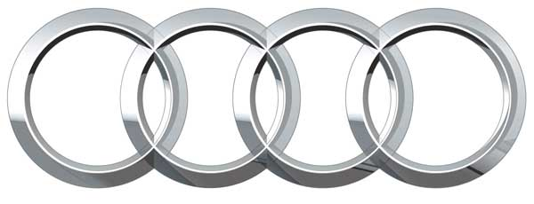

As marcas possuem a capacidade de significar. Cada pequeno ou grande ato de uma marca grava na memória do consumidor um pequeno elo. Um bom conjunto de elos ao longo do tempo se torna uma corrente sólida. Os erros ou defeitos no produto ou serviço desgastam esses elos bem como atitudes positivas reforçam a ligação dessa cadeia. Temos então um consumidor sempre ávido em formar essas correntes em sua memória. Chamamos isso de confiança, uma percepção de integridade e de que promessas serão cumpridas, e mais do que isso, que de forma honesta estará pronta para assumir o controle e recuperar a relação quando essa confiança for quebrada por um erro de gestão ou defeito de produto.

Então como o consumidor pode confiar em marcas que nunca consumiu? Sim, ele irá procurar nos elementos visuais, nos textos e nas informações cognitivas já recebidas sobre a marca anteriormente e irá tomar uma decisão mais emocional e menos racional. Nessa busca ele irá procurar marcas com as quais se identifica, pequenos pontos de contato com sua maneira de pensar e ser. Assim começa a se estabelecer a relação de identificação, integridade e inclusão. Logo a marca não é mais de intangível, pois vestindo, usando ou recebendo os serviços ele passa a sentir-se como parte da tribo. Mas essa identificação pode ir além da confiança e tornar-se desejo. Quando isso ocorre as pessoas passam a comprar marcas e não produtos. O símbolo acima da marca Audi, representado por elos entrelaçados é um exemplar perfeito de marca que inspira confiança e desejo. Outro exemplo é olhar para um diamante bruto, o qual poderá se tornar uma ferramenta para cortar vidros ou ser lapidado na sua melhor forma e incrustado numa joia, dotando quem a possui de beleza ou poder. Assim, é o trabalho do criador que influencia e muda essa percepção.